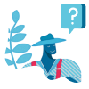

<div class="page-container">
    <section class="heading-section">
        <article class="ff-flex-align-center title">
            <h1 class="page-heading" id="pageHeading">
                {{pageHeading}}
            </h1>
            <span *ngIf="archiveStocksPage" class="chip">Archive</span>
        </article>
        <aside class="ff-flex-end" aria-label="export icon" *ngIf="isListing || archiveStocksPage">
            <article *ngIf="!archiveStocksPage" aria-label="need help" class="need-help" (click)="showHideHelp()" id="needHelp">
                {{'misc.needHelp' | translate}}
            </article>
            <span *ngIf="!archiveStocksPage">|</span>
            <app-export-icon *ngIf="!archiveStocksPage"></app-export-icon>
            <app-buttons *ngIf="!archiveStocksPage" class="ml-10" buttonType="secondary" (click)="goToPage('archive')">
                <span> Go to archive</span>
            </app-buttons>
            <app-buttons *ngIf="archiveStocksPage" class="ml-10" buttonType="secondary" (click)="goToPage('stock')">
                <span> Go to Stocklist</span>
            </app-buttons>
        </aside>
    </section>
    <section class="w-100 ff-flex-end" *ngIf="toggleHelp">
        <div class="help-box ff-flex-align-center">
            
            <span>
                Add stock by clicking on “Receive stock” then you can add stock from farm or anonymous, and also you can
                request stock from a supplier. Select some stock from the list to Send or Convert it.
            </span>
            <mat-icon (click)="showHideHelp()" id="closeHelp">close</mat-icon>
        </div>
    </section>
    <section>
        <router-outlet></router-outlet>
    </section>
</div>